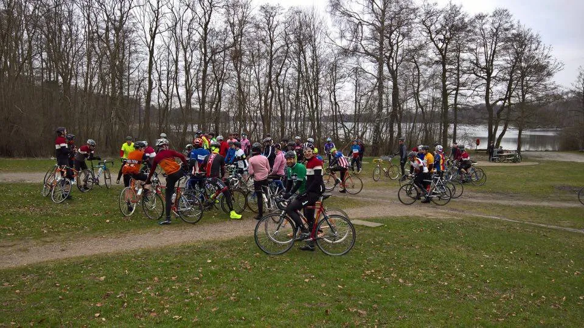

Gentlemen’s Race 2016.

Squadra Moltenis sjælandske rytter Jens Langergaard skød den danske vintage-sæson i gang med “Gentleman’s Race” nord for København i dag.
Af Jens Langergaard
En nysamlet Eddy Merckx replica skal jo ikke stå og samle støv, så søndag stillede jeg til start i Velo Pavés “Gentleman’s Race” arrangeret af cykelbutikken i Farum af samme navn, og i samarbejde med Velopress og Recycles.
Vejrudsigten meldte op til 10 grader, så debuten på min nybyggede Eddy Merckx-replica blev også årets første landevejstur i korte rør.
Gentleman’s Race er rul og race
Ca. 70 ryttere – de allerfleste på stål – forsynede sig med kaffe og morgenbrød i Velo Pavé butikken inden feltet rullede kl 10.00. I feltet sås blandt andet Thomas Marker, Velopress, på sin flotte Gios og tidligere Pro og TDF-etapevinder Jakob Piil i uld på en flot Banani.
Gentlemans race er et uofficielt, ikke-marshall-kontrolleret cykelløb. “Løbet” er lige dele “rulle-tur” lige dele race på landevej, pavéer og grusveje og dagens distance var 50 km i alt.

Efter ca 15 km på asfalt, i skov og lidt pave i samlet flok gjorde vi kort holdt ved Buresø, hvor captain de la Route introducerede løbets tempoafsnit; en 18 km kuperet tur der ville føre os tilbage til Buresø.
Her blev der kørt stram kæde i første gruppe som bestod af ca 20 mand – og hvor jeg sad. Havde ingen computer eller andet moderne på styret, men farten var +40 det meste af loopet og vi passerede flere “superelitemotionister” på træningstur på kulcykler.
Jeg koncentrerede mig om at få rutine og erfaring i at bruge skråskifterne på stangen, og det gik fint. Man skifter knapt så ofte når der kun er 10 gear og ingen skifter i bremsegrebene.
Tilbage ved Buresø fik vi samling på gruppe 1, og så gik det i højt tempo gennem skoven på sti og grus og en pavé, der havde huller og underlag der er så tæt på “Helvede i Nord” som vi nu engang kan komme i hovedstadsområdet. Gruppen blev en anelse splittet her, men der var samling da vi igen var på asfalt.
De sidste kilometer og belgiske øl
De sidste kilometer tilbage til Farum var igen skov og pavé – den som var med i Gran Fondo Copenhagen i 2012 – og på skovstykket sørgede er væltet træ på et stejlt og smalt skovstier for at vi måtte af og trække 20 meter.
Tilbage ved Velo Pavé var der belgisk øl, cykelsnak og Flandern Rundt på skærmen i den hyggelige butik. En god søndag og fin debut på stålcyklen efter faceliftet til Merckx/Molteni i selskab med skønne folk på stål.
De 120 km lørdag – hvor vel 80-90 var skov, grus, pave og strade bianche – kunne godt mærkes i stængerne, men Merckx’en stod og tiggede og bad i stuen i morges, og så var det jo bare om at komme afsted til Gentlemans Race.